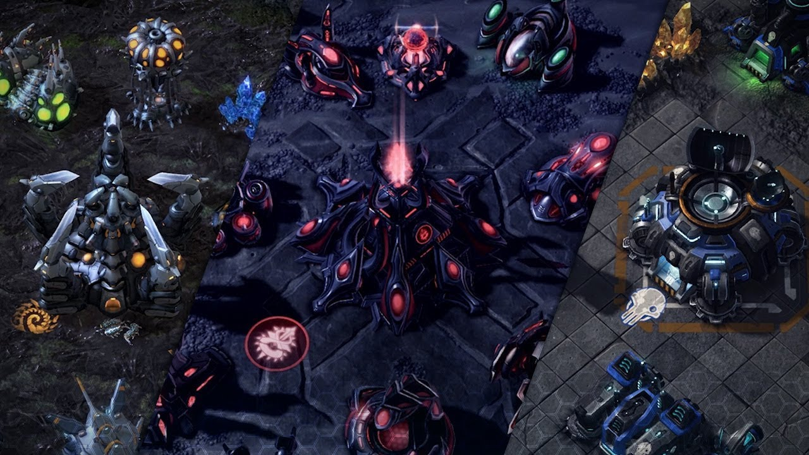

The First of Many
Competitive gaming has existed almost as long as video games themselves. Even the earliest arcade
games
inspired some
fierce competition. Early on, a lot of that competition took the form of friends challenging each
other to
best their
high scores, but it didn’t take long for organized tournaments to begin popping up.
Atari held the first video game competition, the Space Invaders Tournament, in 1980. It attracted
more than
ten thousand
participants. This tournament, and others like it in following years, sowed the seeds of what would
eventually become
eSports.
By the time the 1990s came around, tournaments for arcade and console games had become increasingly
common,
with
companies like Nintendo and Blockbuster sponsoring world championships. Competitive gaming was at
this point
so new that
some tournaments offered brackets for children and teenagers to compete in, a concession no longer
necessary
today.
PC's Success
The 1990s saw the rise of PC gaming, and along with this came the first true eSports
competitions.
1997’s Red Annihilation tournament for the first person shooter (FPS) “Quake” is widely considered
to have
been thefirst real instance of eSports, drawing over 2,000 participants. The winner received Ferrari
previously owned by John Carmack, lead developer for “Quake.”
Just a few weeks after Red Annihilation, the Cyberathlete Professional League, one of the first
major gaming
leagues was founded. Later that year, the CPL held its first tournament. By the next year, it was
already
offering $15,000 in prizemoney. The CPL was just one of the more prominent of many new tournaments
and
leagues founded during this period.
At this time, most eSports focused on first person shooters, sports games, and arcade-style games,
but the
late 90s also
saw the release of the breakout real-time strategy (RTS) hit “StarCraft: Brood War.”
While shooters focus on twitch skills and fast reflexes, RTS games also require careful thought and
long-term planning
and have been compared to a modern version of chess. With its asymmetrically balanced races, each
with their
own unique
troops and abilities, “StarCraft” offered nearly limitless strategic potential and became one of the
driving
forces of
the eSports world, though it would not reach the height of its popularity until after the year 2000.
Esports' Rise

Esports truly started to come into its own after the turn of the millennium, with the rise of both
popular
tournaments
and the games that now make up the backbone of the eSports world.
The year 2000 saw the launch of the World Cyber Games and the Electronic Sports World Cup, both
major
international
tournaments that continue to be held every year. These helped set the tone for the kind of big name
tournaments that
have come to define the eSports world.
Major League Gaming (MLG) launched in 2002 and is now the largest and most successful of the eSports
leagues, featuring
numerous games in a variety of genres – from shooters to RTS games – and offering lavish prize
pools. How
lavish? The
2013 Winter Championships awarded gamers with over a hundred and seventy thousand dollars in
prizes.
MLG was also the first tournament to be televised in North America, with a 2006 “Halo 2” series
being shown
on the USA
Network, though it did not succeed in establishing a major television presence over the long
haul.
These days MLG, like most eSports tournaments, is primarily viewed online, though it draws huge
numbers. The
2012 spring
championship brought in over four million viewers, even beating “real” sporting events, like the
2012 NBA
All-Star Game,
in certain key demographics.
Other major tournaments to arise in recent years include an eSports tournament at Dreamhack – a
massive
Swedish computer
festival drawing attendees from all over the world – and the Global StarCraft II League (GSL), a
South
Korean league
widely considered to be the most prestigious “StarCraft II” competition and thus arguably the
pinnacle of
the RTS gaming
world. The GSL has been doubling its viewers every year since its launch in 2010 and currently
boasts more
than fifty
million viewers around the world. If this trend continues, it will crack one hundred million by the
end of
the year.
eSports tournaments would be nothing without exciting, spectator-friendly games for competitors to
play. The
last decade
has seen the release of most of these games.
eSports Starcraft 2.
Sci-fi FPS franchise “Halo” is a pillar of the FPS world, enticing players and spectators alike with
its
intense,
fast-paced gameplay. As previously mentioned, “StarCraft II” – launched in 2010 – sits atop the RTS
world,
having taken
everything that made the original “StarCraft” great and improved it with enhanced graphics and new
strategic
possibilities.
A relative newcomer to the eSports world is the MOBA, or Multiplayer Online Battle Arena, genre.
Based on
the fan-made
“Defense of the Ancients” mod for “Warcraft III” – another game from Blizzard Entertainment,
developers of
the
“StarCraft” franchise – MOBAs are similar to RTS games but allow players to control only a single
hero on
the
battlefield. This forces them to rely on other players to defeat the enemy army.
MOBAs have exploded in popularity and now dominate much of the eSports world. Most popular among
these is
“League of
Legends” or “LoL.” Released in 2009, some claim “LoL” to be the most played video game in the world,
with
over 30
million players and tournaments that attract thousands of viewers and offer millions in
prizes.
The 2011 “LoL” tournament at Dreamhack is reported to have had over 1.6 million viewers worldwide.
The
following year,
2012’s “LoL” Season Two World Championship attracted eight thousand live viewers, 900,000 worldwide
viewers,
and a prize
pool of over five million dollars.
What now?
As video games become ever more popular, so too do eSports. The more people play games, the more
potential
fans of
eSports there are. And as games grow more advanced, they become more exciting for
spectators.
eSports has yet to achieve popularity in mainstream culture, but the phenomenon is fast approaching
a
tipping point
where it will. eSports tournaments continue to grow in size and viewership, and each year brings
them closer
to the
level of popularity and acceptance enjoyed by physical sports. Take, for example, the activity known
as
BarCraft, where
“StarCraft II” fans gather in bars to watch pro matches over a cold beer and some snacks.
Don’t be surprised if future MLG or GSL tournaments generate the same fevered excitement as the
World Series
of Poker.